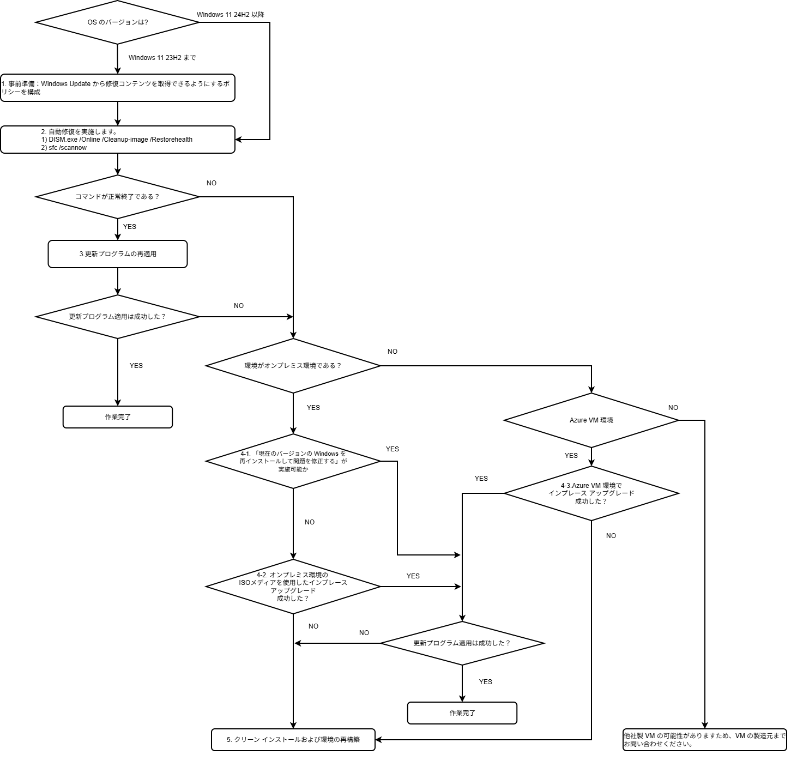

※ 本記事はマイクロソフト社員によって公開されております。
みなさま、こんにちは。Windows サポート チームです。
本記事では Windows クライアント OS における自動修復およびインプレース アップグレードによる修復の方法をご紹介します。
Windows クライアント OS ではなく、Windows Server 2025 などの サーバー OS をご利用の場合は、下記の記事をご覧ください。
なお、各手順をご実施前に、念のため各種データのバックアップをご実施いただくことをお勧めいたします。
目次
0. 全体の流れ
1. 事前準備
2. 自動修復を実施します
3. 更新プログラムの再適用
4. インプレース アップグレードによる修復
4-1. オンプレミス環境の現在のバージョンの Windows を再インストールして問題を修正する
4-2. オンプレミス環境の ISO メディアを使用したインプレース アップグレード
4-3. Azure VM 環境のインプレース アップグレード
5. クリーン インストールおよび環境の再構築について
0. 全体の流れ

1. 事前準備
更新プログラムの適用に失敗し、以下の公開情報に記載されているような OS の破損が疑われるエラー コードが確認された場合、修復コマンドを実施によって事象が改善する場合があります。
タイトル : Common corruption errors
URL : https://learn.microsoft.com/en-us/troubleshoot/windows-server/installing-updates-features-roles/fix-windows-update-errors?utm_source=chatgpt.com#common-corruption-errors
その事前準備として、以下の手順をご実施ください。
Windows 11 24H2 以降 : Windows Update に接続できるよう、以下のグループポリシーを一時的に設定しておきます。
- [コンピューターの構成] - [管理用テンプレート] - [システム] - [オプション コンポーネントのインストールおよびコンポーネントの修復のための設定を指定する] : 無効 or 未構成
Windows 11 23H2 まで : Windows Update に接続できるよう、以下のグループポリシーを一時的に設定しておきます。
[コンピューターの構成] - [管理用テンプレート] - [システム] - [オプション コンポーネントのインストールおよびコンポーネントの修復のための設定を指定する] : 有効
項目 [Windows Server Update Service (WSUS) の代わりに、Windows Update から修復コンテンツとオプションの機能を直接ダウンロードする] にチェック追加[コンピューターの構成] - [管理用テンプレート] - [Windows コンポーネント] - [Windows Update] - [インターネット上の Windows Update に接続しない] : 無効 or 未構成
[コンピューターの構成] - [管理用テンプレート] - [システム] - [インターネット通信の管理] - [インターネット通信の設定] - [Windows Update のすべての機能へのアクセスをオフにする] : 無効 or 未構成
[コンピューターの構成] - [管理用テンプレート] - [Windows コンポーネント] - [Windows Update] - [Windows Server Update Service から提供される更新プログラムの管理] - [Windows Update の特定のクラスにソースサービスを指定する] : 無効 or 未構成
2. 自動修復を実施します
以下の公開情報の手順に従い、管理者権限で以下 2 つの自動修復コマンドを実行します。
- DISM.exe /Online /Cleanup-image /Restorehealth
- sfc /scannow
タイトル : システム ファイル チェッカー ツールを使用して不足または破損しているシステム ファイルを修復する
URL : https://support.microsoft.com/ja-jp/topic/79aa86cb-ca52-166a-92a3-966e85d4094e
実施手順
コマンド プロンプトを管理者として起動します。
以下のコマンドを入力します。
1
DISM.exe /Online /Cleanup-image /RestoreHealth
「復元操作は正常に完了しました」 と完了しましたら、 続けて次のコマンドを実行します。
1
sfc /scannow
sfc /scannow のコマンドが完了しましたら、 3. 更新プログラムの再適用 にお進みください。
なお、手順 3 で 「ソース ファイルが見つかりませんでした」というエラーが発生した場合、修復に必要なソースが見つからないか、取得に失敗した可能性があります。
その場合は、4. インプレース アップグレードによる修復 に進んでください。
3. 更新プログラムの再適用
更新プログラムの再適用を行い、正常に適用できた場合：作業完了
更新プログラムの再適用後も、適用できなかった場合： 4 へ
4. インプレース アップグレードによる修復
後述のいずれかの方法でインプレース アップグレードを実施ください。
実施後に更新プログラムの適用を行い、事象が改善するか確認ください。
4-1. オンプレミス環境の現在のバージョンの Windows を再インストールして問題を修正する
下記公開情報を元に、Windows Update を使用したインプレース アップグレードを実施ください。
タイトル: 現在のバージョンの Windows を再インストールして問題を修正する
URL: https://support.microsoft.com/ja-jp/windows/497ac6da-7cac-4641-82a5-f50398d879a0
「現在のバージョンの Windows を再インストールして問題を修正する」 が利用不可能あるいは実施しても改善しない場合：4-2 へ
4-2. オンプレミス環境の ISO メディアを使用したインプレース アップグレード
手順は以下のとおりです。
- ご利用の Windows と同じバージョンの OS イメージ (ISO ファイルでも DVD や USB 等の物理メディアでも可) を用意します。
- ISO ファイルの入手方法につきましては、補足情報 をご参考ください。
- OS イメージ内の setup.exe を実行します。
- 「セットアップ」の画面が立ち上がりますので、画面にしたがって進めていきます。
- 「インストール準備完了」という画面で、ユーザー情報およびアプリケーションが引き継がれる形となっているかを確認します。
- 引き継がれる設定となっている場合は「インストール」を選択し、インプレース アップグレードを進めます。
- インプレース アップグレードの完了を待ちます。処理中は複数回の OS 再起動が発生します。
以上で手順は完了です。更新プログラムを適用します。
更新プログラムが適用できない場合や、ISO メディアによるインプレース アップグレードができない場合：5へ
4-3. Azure VM 環境のインプレース アップグレード
Azure VM 環境の場合、以下の公開情報を参考し、Azure 環境でインプレース アップグレードを実施します。
タイトル : In-place upgrade for supported VMs running Windows in Azure (Windows client)
URL : https://learn.microsoft.com/en-us/troubleshoot/azure/virtual-machines/windows/in-place-system-upgrade?toc=%2Fazure%2Fvirtual-machines%2Ftoc.json
以上で手順は完了です。更新プログラムを適用します。
更新プログラムが適用できない場合や、Azure VM 環境のインプレース アップグレードができない場合：5へ
5. クリーン インストールおよび環境の再構築について
インプレース アップグレード後も事象が改善されない場合、オンプレミス環境につきましては OS のクリーン インストールを、Azure VM 環境につきましては、環境を再構築することをお勧めいたします。
今すぐ再構築することが難しい、もしくは再構築を実施する前に、手動での修復を試したい、という場合は、以下のブログ記事を参考し、手動による修復をお試しいただけます。
[補足事項] インプレース アップグレードに使用する ISO メディアの入手方法
・ インプレース アップグレードする OS が最新版の Home / Pro / Education の場合は、 以下の URL から Windows 11 のインストール メディア作成ツールを使用し、ISO メディアを作成してください。
タイトル : Windows 11 のダウンロード
URL : https://www.microsoft.com/ja-jp/software-download/windows11
参照個所 : Windows 11 のインストール メディアを作成する
・ Enterprise エディションの場合で、ボリューム ライセンス契約をお持ちの場合は、ご契約のアカウントにて Microsoft 365 管理センターより入手ください。
入手方法についてご不明な点がありましたら、以下 VLSC 窓口にご相談ください。
1 | ■ VLSC 窓口情報 |
[特記事項]
本情報の内容（添付文書、リンク先などを含む）は、作成日時点でのものであり、予告なく変更される場合があります。